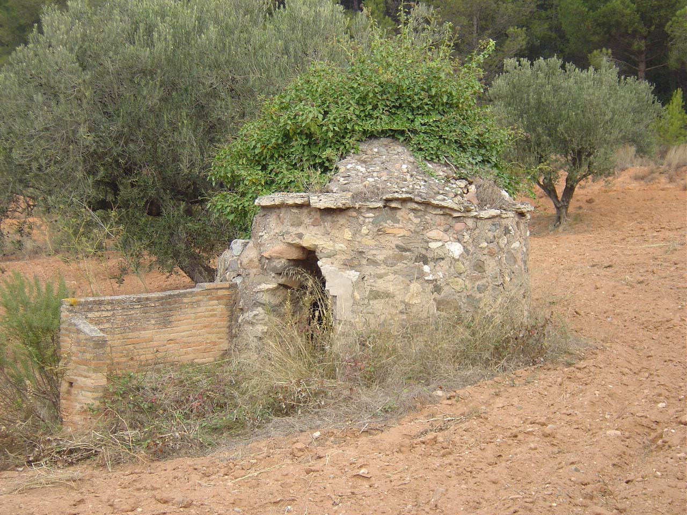

|  |
Nom de l’element: Barraques de vinya
Clau d’identificació: C.08
Nucli o indret: Diverses barraques distribuïdes per tot el terme municipal.
UTM: "falta UTM"
Règim del sòl: sòl no urbanitzable.
Egrave;poca de construcció i tipologia:
Antigues barraques de pagès realitzades amb pedra seca o bé excavades en parets d’argila del territori, amb la finalitat de guardar les eines del pagès, així com per aixopluc en cas de condicions meteorològiques adverses.
1.2. Estat de conservació:
Estat de conservació divers.
1.3. Ús actual:
Sense ús, paisatgístic en alguns casos.
1.4. Accés:
Accés amb dificultat variable segons la barraca considerada.
Forma part de l’important patrimoni agrícola del que ha comptat tradicionalment Castellbisbal.
3.1. Usos admesos:
Espais lliures, ús recreatiu cultural i social.
3.2. Condicions d’ordenació:
Segons Pla Especial a redactar.
3.3. Accés
Xarxa de pistes i camins forestals distribuïts pel terme municipal.
BPU (Bé Protegit Urbanísticament)